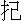

衣冠未必皆男子，巾幗如何定婦人？
歷數古今多怪事，高山為谷海生塵。
且說國朝成化年間，山東有一男子，姓桑，名茂，是個小家之子。垂髻時，生得紅白細嫩。一日，父母教他往村中一個親戚人家去，中途遇了大雨，閃在冷廟中躲避。那廟中先有一老嫗也在內躲雨，兩個做一堆兒坐地。那雨越下越大了，出頭不得。老嫗看見桑茂標緻，將言語調他。桑茂也略通些情竅，只道老嫗要他幹事。臨上交時，原來老嫗腰間倒有本錢，把桑茂後庭弄將起來。事畢，雨還未止。桑茂終是孩子家，便問道：「你是婦道，如何有那話兒？」老嫗道：「小官，我實對你說，莫要泄漏於他人。我不是婦人，原是個男子。從小縛做小腳，學那婦道妝扮，習成低聲啞氣，做一手好針線，潛往他鄉，假稱寡婦，央人引進豪門巨室行教。女眷們愛我手藝，便留在家中，出入房闊，多與婦女同眠，恣意行樂。那婦女相處情厚，整月留宿，不放出門。也有閨女貞娘，不肯胡亂的，我另有媚藥兒，待他睡去，用水噴在面上，他便昏迷不醒，任我行事。及至醒來，我已得手。他自怕羞辱，不敢聲張，還要多贈金帛送我出門，囑付我莫說。我今年四十七歲了，走得兩京九省，到處嬌娘美婦，同眠同臥，隨身食用，並無缺乏，從不曾被人識破！」桑茂道：「這等快活好事，不知我可學得麼？」老嫗道：「似小官恁般標緻，扮婦女極像樣了。你若肯投我為師，隨我一路去，我就與你纏腳，教導你做針線，引你到人家去，只說是我外甥女兒，得便就有良遇。我一發把媚藥方兒傳授與你，包你一世受用不盡！」桑茂被他說得心癢，就在冷廟中四拜，投老嫗為師。也不去訪親訪眷，也不去問爹問娘，等待雨止，跟著老嫗便走。那老嫗一路與桑茂同行宿。出了山東境外，就與桑茂三綹梳頭，包裹中取出女衫換了，腳頭纏緊，套上一雙窄窄的尖頭鞋兒，看來就像個女子，改名鄭二姐。後來年長到二十二歲上，桑茂要辭了師父，自去行動。師父吩咐道：「你少年老成，定有好人相遇。只一件，凡得意之處，不可久住。多則半月，少則五日，就要換場，免露形跡。還一件，做這道兒，多見婦人，少見男子，切忌與男子相近交談。若有男子人家，預先設法躲避。倘或被他看出破綻，性命不保。切記，切記！」桑茂領教，兩下分別。
後來桑茂自稱鄭二娘，各處行遊哄騙。也走過一京四省，所奸婦女，不計其數。到三十二歲上，遊到江西一個村鎮，有個大戶人家女眷留住，傳他針線。那大戶家婦女最多，桑茂迷戀不捨，住了二十餘日不去。大戶有個女婿，姓趙，是個納粟監生。一日，趙監生到岳母房中作揖，偶然撞見了鄭二娘，愛其俏麗，囑咐妻子接他來家。鄭二娘不知就裡，欣然而往。被趙監生邀入書房，攔腰抱住，定要求歡。鄭二娘抵死不肯，叫喊起來。趙監生本是個粗人，惹得性起，不管三七二十一，競按倒在床上去解他褲襠。鄭二娘擋抵不開，被趙監生一手插進，摸著那話兒，方知是個男人女扮。當下叫起家人，一索捆翻，解到官府。用刑嚴訊，招稱真姓真名，及向來行奸之事，污穢不堪。府縣申報上司，都道是從來未有之變。具疏奏聞，刑部以為人妖敗俗，律所不載，擬成凌遲重辟，決不待時。可憐桑茂假充了半世婦人，討了若干便宜，到頭來死於趙監生之手。正是：
福善禍淫天有理，律輕情重法無私。
方才說的是男人妝女敗壞風化的。如今說個女人妝男，節孝兼全的來正本，恰似：
薰蕕不共器，堯舜好相形。毫釐千里謬，認取定盤星。
這話本也出在本朝宣德年間，有一老者，姓劉，名德，家住河西務鎮上。這鎮在運河之旁，離北京有二百里田地，乃各省出入京都的要路。舟揖聚泊，如螞蟻一般；車音馬跡，日夜絡繹不絕。上有居民數百餘家，邊河為市，好不富庶。那劉德夫妻兩口，年紀六十有餘，並無弟兄子女。自己有幾間房屋，數十畝田地，門首又開一個小酒店兒。劉公平昔好善，極肯周濟人的緩急。凡來吃酒的，偶然身邊銀錢缺少，他也不十分計較。或有人多把與他，他便勾了自己價銀，餘下的定然退還，分毫不肯萄取。有曉得的，問道：「這人錯與你的，落得將來受用，如何反把來退還？」劉公說：「我身沒有子嗣，多因前生不曾修得善果，所以今世罰做無把之鬼，豈可又為恁樣欺心的事！倘然命裡不該時，錯得了一分到手，或是變出些事端，或是染患些疾病，反用去幾錢，卻不倒折便宜？不若退還了，何等安逸。」因他做人公平，一鎮的人無不敬服，都稱為劉長者。一日，正值隆冬天氣，朔風凜洌，彤雲密布，降下一天大雪。原來那雪：
能穿幃幕，善度簾櫳。乍飄數點，俄驚柳絮飛颺；狂舞一番，錯認梨花亂墜。聲從竹葉傳來，香自梅枝遞至。塞外征人穿凍甲，山中隱士擁寒衾。王孫綺席倒金尊，美女紅爐添獸炭。
劉公因天氣寒冷，暖起一壺熱酒，夫妻兩個向火對飲。吃了一回，起身走到門首看雪。只見遠遠一人背著包裹，同個小廝迎風冒雪而來。看看至近，那人仆的一交，跌在雪裡，掙扎不起。小廝便向前去攙扶。年小力微，兩個一拖，反向下邊跌去，都滾做一個肉餃兒。抓了好一回，方才得起。劉公擦摩老眼看時，卻是六十來歲的老兒，行纏絞腳，八搭麻鞋，身上衣服甚是襤褸。這小廝倒也生得清秀，腳下穿一雙小布䩺靴。那老兒把身上雪片抖淨，向小廝道：「兒，風雪甚大，身上寒冷，行走不動。這裡有個酒店在此，且買一壺來盪盪寒再行。」便走入店來，向一副座頭坐下，把包裹放在桌上，那小廝坐於旁邊。劉公去煖一壺熱酒，切一盤牛肉，兩碟小菜，兩副杯箸，做一盤兒托過來擺在桌上。小廝捧過壺來，斟上一杯，雙手遞與父親，然後篩與自己。
劉公見他年幼，有些禮數，便問道：「這位是令郎麼？」那老兒道：「正是小犬。」劉公道：「今年幾歲了？」答道：「乳名申兒，十二歲了。」又問道：「客官尊姓？是往哪裡去的？恁般風雪中行走。」那老兒答道：「老漢方勇，是京師龍虎衛軍士，原籍山東濟寧。今要回去取討軍莊盤纏；不想下起雪來。」問主人家尊姓，劉公道：「在下姓劉，招牌上近河，便是賤號。」又道：「濟寧離此尚遠，如何不尋個腳力，卻受這般辛苦？」答道：「老漢是個窮軍，哪裡雇得起腳力！只得慢慢的捱去罷了。」劉公舉目看時，只見他單把小菜下酒：那盤牛肉，全然不動。問道：「長官父子想都是奉齋麼？」答道：「我們當軍的人，吃甚麼齋！」劉公道：「既不奉齋，如何不吃些肉兒？」答道：「實不相瞞，身邊盤纏短少，吃小菜飯兒，還恐走不到家。若用了這大菜，便去了幾日的口糧，怎生得到家裡？」劉公見他說恁樣窮乏，心中慘然，便道：「這般大雪，腹內得些酒肉，還可擋得風寒，你只管用，我這裡不算賬罷了。」老軍道：「主人家休得取笑！那有吃了東西，不算賬之理？」劉公道：「不瞞長官說；在下這裡，比別家不同。若過往客官，偶然銀子缺少，在下就肯奉承。長官既沒有盤纏，只算我請你罷了。」老軍見他當真，便道：「多謝厚情，只是無功受祿，不當人子。老漢轉來，定當奉酬。」劉公道：「四海之內，皆兄弟也。這些小東西，值得幾何，怎說這奉酬的話！」老漢方才舉著。劉公又盛過兩碗飯來，道：「一發吃飽了好行路。」老軍道：「忒過分了！」父子二人正在飢餒之時，拿起飯來，狼餐虎咽，盡情一飽。這才是：
救人須救急，施人須當厄。渴者易為飲，飢者易為食。
當下吃完飯，劉公又叫媽媽點兩杯熱茶來吃了。老軍便腰間取出銀子來還錢。劉公連忙推住道：「剛才說過，是我請你的，如何又要銀子？恁樣時，倒像在下說法賣這盤肉了。你且留下，到前途去盤纏。」老軍便住了手，千恩萬謝，背上了包裹，作辭起身。走出門外，只見那雪越發大了。對面看不出人兒。被寒風一吹，倒退下幾步。小廝道：「爹，這般大雪，如何行走？」老軍道：「便是沒奈何，且捱到前途，覓個宿店歇罷。」小廝眼中便流下淚來。劉公心中不忍，說道：「長官，這般風寒大雪，著甚要緊，受此苦楚！我家空房床鋪盡有，何不就此安歇，候天晴了走，也未遲。」老軍道：「若得如此，甚好，只是打攪不當。」劉公道：「說哪裡話！誰人是頂著房子走的？快快進來，不要打濕了身上。」老軍引著小廝，重新進門。劉公領去一間房裡，把包裹放下。看床上時，席子草薦都有。劉公還怕他寒冷，又取出些稻草來，放在上面。老軍打開包裹，將出被窩鋪下。此時天氣尚早，准頓好了，同小廝走房來。劉公已將店面關好，同媽媽向火，看見老軍出房，便叫道：「方長官，你若冷時，有火在此，烘一烘暖活也好。」老軍道：「好倒好，只是奶奶在那裡，恐不穩便。」劉公道：「都是老人家了，不妨得。」
老漢方才同小廝走過來，坐於火邊。那時比前又加識熟，便稱起號來，說：「近河，怎麼只有老夫妻兩位？想是令郎們另居麼？」劉公道：「不瞞你說，老拙夫妻今年六十四歲，從來不曾生育，哪裡得有兒子？」老軍道：「何不承繼一個，服侍你老年也好？」劉公答道：「我心裡初時也欲得如此。因常見人家承繼來的，不得他當家替力，反惹悶氣，不如沒有的倒得清淨。總要時，急切不能有個中意的，故此休了這念頭。若得你令郎這樣一個，卻便好了，只是如何得能夠？」兩個閒話一回，看看已晚，老軍討了個燈火，叫聲安置，同兒子到客房中來安歇。對兒子說：「兒，今日天幸得遇這樣好人。若沒有他時，凍也要凍死了。明日莫管天晴下雪，早些走罷。打攪他，心上不安。」小廝道：「爹說得是！」父子上床安息。
不想老軍受了些風寒，到下半夜，火一般熱起來，口內只是氣喘，討湯水吃。這小廝家夜晚間又在客店裡，那處去取？巴到天明，起來開房門看時，那劉公夫妻還未曾起身。他又不敢驚動，原把門兒掩上，守在床前。少頃，聽得外面劉公咳嗽聲響，便開門走將出來。劉公一見，便道：「小官兒，如何起得早恁早？」小廝道：「告公公得知，不想爹爹昨夜忽然發起熱來，口中不住吁喘，要討口水吃，故此起得早些。」劉公道：「噯呀！想是他昨日受些寒了。這冷水怎麼吃得？待我燒些熱湯與你。」小廝道：「怎好又勞公公？」劉公便教媽媽燒起一大壺滾湯。
劉公送到房裡，小廝扶起來吃了兩碗。老軍睜眼觀看，見劉公在旁，謝道：「難為你老人家！怎生報答？」劉公走近前道：「休恁般說。你且安心自在，蓋熱了發出些汗來便好了。」小廝放倒下去。劉公便扯被兒與他蓋好。見那被兒單薄，說道：「可知道著了寒！如何這被恁薄？怎能發的汗出？」媽媽在門外聽見，即去取出一條大被絮來道：「老官兒，有被在此。你與他蓋好了。這般冷天氣，不是當耍的。」小廝便來接去。劉公與他蓋得停當，方才走出。少頃，梳洗過，又走進來，問：「可有汗麼？」小廝道：「我才摸時，並無一些汗氣。」劉公道：「若沒汗時，這寒氣是感的重的了，須請個太醫來用藥，表他的汗出來方好。不然，這風寒怎能勾發泄？」小廝道：「公公，身伴無錢，將何請醫服藥？」劉公道：「不消你費心，有我在此。」小廝聽說，即便叩頭道：「多蒙公公厚恩，救我父親。今生若不能補報，死當為犬馬償恩！」劉公連忙扶起道：「快不要如此，既在此安歇，我便是親人了，豈忍坐視！你自去房中服侍，老漢與你迎醫。」
其日雪止天霽，街上的積雪被車馬踐踏，盡為泥濘，有一尺多深。劉公穿個木屐，出街望了一望，復身進門。小廝看劉公轉進來，只道不去了，噙著兩行淚珠，方欲上前叩問，只見劉公從後屋牽出個驢兒騎了，出門而去。小廝方才放心。且喜太醫住得還近，不多時便到了。那太醫也騎個驢兒，家人背著藥箱，隨在後面，到門首下了。
劉公請進堂中，吃過茶，然後引至房裡。此時老軍已是神思昏迷，一毫人事不省。太醫診了脈，說道：「這是個雙感傷寒，風邪已入於腠理。傷寒書上有兩句歌云：『兩感傷寒不需治，陰陽毒過七朝期。』此乃不治之症。別個醫家，便要說還可以救得。學生是老實的，不敢相欺。這病下藥不得了。」小廝見說，驚得淚如雨下，拜倒在地上，哭說道：「萬望先生垂憐我父子是個異鄉之人，怎生用帖藥救得性命，決不忘恩！」太醫扶起道：「不是我作難，其實病已犯實，教我也無奈。」劉公道：「先生，常言道：『藥醫不死病，佛度有緣人。』你且不要拘泥古法，盡著自家意思，大了膽醫去，或者他命不該絕，就好了也未可知。萬一不好，決無歸怨你之理。」先生道：「既是長者恁般說，且用一帖藥看。若吃了發得汗出，便有可生之機，速來報我，再將藥與他吃。若沒汗時，這病就無救了，不消來覆我。」教家人開了藥箱兒，撮了一帖藥劑，遞與劉公道：「用生薑為引，快煮與他吃。這也是萬分之一，莫做指望。」劉公接了藥，便去封出一百文錢，遞與太醫道：「些少藥資，權為利市。」太醫必不肯受而去。
劉公夫妻兩人，親自把藥煎好，將到房中與小廝相幫，扶起吃了，將被沒頭沒腦的蓋下。小廝在旁守候。劉公因此事忙亂一朝，把店中生意都耽擱了，連飯也沒功夫去煮。直到午上，方吃早膳。劉公去喚小廝吃飯。那小廝見父親病重，心中荒急，哪裡要吃。在三勸慰，才吃了半碗。
看看到晚，摸那老軍身上，並無一些汗點。那時連劉公也慌張起來。又去請太醫時，不肯來了。准准到七日，嗚呼哀哉。正是：
三寸氣在千般用，一日無常萬事休。
可憐那小廝申兒哭倒在地。劉公夫婦見他哭得悲切，也涕淚交流，扶起勸道：「方小官，死者不可復生，哭之無益。你且將息自己身子。」小廝雙膝跪下哭告道：「兒不幸，前年喪母，未能入土，故與父謀歸原籍，求取些銀兩來殯葬。不想逢此大雪，路途艱楚。得遇恩人，賜以酒飯，留宿在家，以為萬千之幸。誰料皇天不佑，父忽驟病。又蒙恩人延醫服藥，日夜看視，勝如骨肉。只指望痊愈之日，圖報大恩。那知竟不能起，有負盛意！此間舉目無親，囊乏錢鈔，衣棺之類，料不能辦，欲求恩人借數尺之土，把父骸掩蓋，兒情願終身為奴僕，以償大恩，不識恩人肯見允否？」說罷，拜伏在地。
劉公扶起道：「小官人休慮！這送終之事，都在於我，豈可把來槁葬？」小廝又哭拜道：「得求隙地埋骨，以出望外，豈敢復累恩人費心破鈔！此恩此德，教兒將何補報？」劉公道：「這是我平昔志願，那望你的報償！」當下忙忙的取了銀子，便去買辦衣衾棺木，喚兩個土工來，收拾入殮過了。又備羹飯祭奠，焚化紙錢。那小廝悲慟，自不必說。就擡到屋後空地埋葬好了。又立一個碑額，上寫「龍虎衛軍士方勇之墓」。諸事停當，小廝向劉公夫婦叩頭拜謝。
過了兩日，劉公對小廝道：「我欲要教你回去，訪問親族來搬喪回鄉，又恐怕你年紀幼小，不認得路途。你且暫住我家，俟有識熟的在此經過，托他帶回故鄉，然後徐圖運柩回去。不知你的意下何如？」小廝跪下泣告道：「兒受公公如此大恩，地厚天高，未曾報得，豈敢言歸！且恩人又無子嗣，兒雖不才，倘蒙不棄，收充奴僕，朝夕服侍，少效一點孝心。萬一恩人百年之後，亦堪為墳前拜掃之人。那時到京取回先母遺骨，同父骸葬於恩人墓道之側，永守於此，這便是兒之心願。」劉公夫婦大喜道：「若得你肯如此，乃天賜與我為嗣！豈有為奴僕之理！今後當以父子相稱。」小廝道：「即蒙收留，即今日就拜爹媽。」便掇兩

椅兒居中放下，請老夫婦坐了，四雙八拜，認為父子。遂改姓為劉。劉公又不忍沒其本姓，就將方字為名，喚做劉方。自此日夜辛勤，幫家過活，奉侍劉公夫婦，極其盡禮孝敬。老夫婦也把他如親生一般看待。有詩為證：劉方非親是親，劉德無子有子。
小廝事死事生，老軍雖死不死。
時光似箭，不覺劉方在劉公家裡已過了兩個年頭。時值深秋，大風大雨，下了半月有餘。那運河內的水，暴漲有十來丈高下，猶如百沸湯一般，又緊又急。往來的船隻，壞了無數。一日午後，劉方在店中收拾，只聽得人聲鼎沸。他只道甚麼火發，忙來觀看，見岸上人捱擠不開，都望著河中。急走上前來看時，卻是上流頭一隻大客船，被風打壞，淌將下來。船上之人，飄溺已去大半，餘下的抱桅攀舵，呼號哀泣，只叫：「救人！」那岸上看的人，雖然有救撈之念，只是風水利害，誰肯從井救人。眼盻盻看他一個個落水，口中只好叫句「可憐」而已。忽然一陣大風，把那船吹近岸旁。岸上人一齊喊聲：「好了！」頃刻挽撓鉤子二十多張，一齊都下，搭住那船，救起十數多人，各自分頭投店內。有一個少年，年紀不上二十，身上被挽鉤摘傷幾處，行走不動，倒在地下，氣息將絕，尚緊緊抱住一隻竹箱，不肯放捨。劉方在旁睹景傷情，觸動了自己往年冬間之事，不覺流下淚來，想道：「此人之苦，正與我一般。我當時若沒有劉公時，父子屍骸不知歸於何處矣。這人今日卻便沒人憐救了，且回去與爹媽說知，救其性命。」急急轉家，把上項事報知劉公夫婦，意欲扶他回家調養。劉公道：「此是陰德美事，為人正該如此。」劉媽媽道：「何不就同他來家？」劉方道：「未曾稟過爹媽，怎敢擅便？」劉公道：「說哪裡話！我與你同去。」
父子二人，行至岸口，只見眾人正圍著那少年觀看。劉公分開眾人，捱身而入，叫道：「小官人，你掙扎著，我扶你到家去將息。」那少年睜眼看了一看，點點頭兒。劉公同劉方向前攙扶。一個幼年力弱，一個老年衰邁，全不濟事。旁邊轉過一個軒趷刺的後生道：「老人家閃開，待我來。」向前一抱，輕輕的就扶了起來。那後生在右，劉公在左，兩旁挾住肐膊便走。少年雖然說話不出，心下卻甚明白，把嘴弩著竹箱。劉方道：「這箱子待我與你馱去。」把來背在肩上，在前開路。眾人閃在兩邊，讓他們前行，隨後便都跟來看。內中認得劉公的，便道：「還是劉長者有些義氣。這個異鄉落難之人，在此這一回，並沒有個慈悲的，肯收留去，偏他一曉得了便攙扶回家。這樣人，真個是世間少有！只可惜無個兒子，這也是天公沒分曉。」又有道：「他雖沒有親兒，如今承繼這劉方，甚是孝順，比嫡親的尤勝，這也算是天報他了。」那不認得的，見他老夫妻自來攙扶，一個小廝與他馱了竹箱，就認做那少年的親族。以後見土人紛紛傳說，方才曉得，無不讚嘆其義。還有沒肚子的人，稱量他那竹箱內有物無物、財多財少。此乃是人面相似，人心不同，不在話下。
且說劉公同那後生扶少年到家，向一間客房裡放下。劉公叫聲：「勞動。」後生自去。劉方把竹箱就放在少年之旁。劉媽媽連忙去取乾衣，與他換下濕衣，然後扶在鋪上。原來落水人吃不得熱酒，劉公曉得這道數，教媽媽取釅酒略溫一下，儘著少年痛飲，就取劉方的臥被，與他蓋了。夜間就教劉方伴他同臥。
到次早，劉公進房來探問。那少年已覺健旺，連忙掙扎起來，要下床稱謝。劉公急止住道：「莫要勞動調養身子要緊！」那少年便向枕上叩頭道：「小子乃垂死之人，得蒙公公救拔，實再生之公母。但不知公尊姓？」劉公道：「老拙姓劉。」少年道：「原來與小子同姓。」劉公道：「官人哪裡人氏？」少年答道：「小子劉奇，山東張秋人氏。二年前，隨公三考在京。不幸遇了時疫，數日之內，公母俱喪，無力扶柩還鄉，只得將來火化。」指著竹箱道：「奉此骸骨歸葬，不想又遭此大難。自分必死，天幸得遇恩人，救我之命。只是行李俱失，一無所有，將何報答大恩？」劉公道：「官人差矣！不忍之心，人皆有之。救人一命，勝造七級浮屠。若說報答，就是為利了，豈是老漢的本念！」劉奇見說，愈加感激。
將息了兩日，便能起身，向劉公夫婦叩頭泣謝。那劉奇為人溫柔俊雅，禮貌甚恭。劉公夫婦十分愛他。早晚好酒好食管待。劉奇見如此殷勤，心上好生不安。欲要辭歸，怎奈鉤傷之處潰爛成瘡，步履不便，身邊又無盤費，不能行動，只得權且住下。正是：
不戀故鄉生處好，受恩深處便為家。
卻說劉方與劉奇年貌相仿，情投契合，各把生平患難細說。二人因念出處相同，遂結拜為兄弟，友愛如嫡親一般。一日，劉奇對劉方道：「賢弟如此美質，何不習些書史？」劉方答道：「小弟甚有此志，只是無人教導。」劉奇道：「不瞞賢弟說，我自幼攻書，博通今古，指望致身青雲。不幸先人棄後。無心於此。賢弟肯讀書時，尋些書本來，待我指引便了。」劉方道：「若得如此，及弟之幸也。」連忙對劉公說知。劉公見說是個飽學之士，肯教劉方讀書，分外歡喜，即便去買許多書籍。劉奇罄心指教，那劉方穎悟過人，一誦即解。日裡在店中看管，夜間挑燈而讀。不過數月，經書詞翰，無不精通。
且說劉奇在劉公家中住有半年，彼此相敬相愛，勝如骨肉。雖然依傍得所，只是終日坐食，心有不安。此時瘡口久愈，思想要回故土，來對劉公道：「多蒙公公夫婦厚恩，救活殘喘，又攪擾半年，大恩大德，非口舌可謝。今卻暫辭公公，負先人骸骨葬。服闋之後，當圖報效。」劉公道：「此乃官人的孝心，怎好阻擋，但不知幾時起行？」劉奇道：「今日告過公公，明早就行。」劉公道：「既如此，待我去覓個便船與你。」劉奇道：「水路風波險惡，且乏盤纏，還從陸路行罷。」劉公道：「陸路腳力之費，數倍於舟，且又勞碌。」劉奇道：「小子不用腳力，只是步行。」劉公道：「你身子怯弱，只何走得遠路？」劉奇道：「公公！常語道的好：『有銀用銀，無銀用力。』小子這樣窮人，還惜得什麼辛苦？」
劉公想了一想，道：「這也易處。」便教媽媽整備酒餚，與劉奇送行。飲至中間，劉公泣道：「老拙與官人萍水相逢，聚首半年，恩同骨肉，實是不忍分離。但官人送尊人入土，乃人子大事，故不好強留。只是自今一別，不知後日可能得再見否？」說罷，欷歔不勝。劉媽媽與劉方盡皆淚下。劉奇也泣道：「小子此行，實非得已。俟服一滿，即星夜馳來奉候，幸勿過悲。」劉公道：「老拙夫婦年近七旬，如風中之燭，早暮難保。恐君服滿來時，在否不可知矣。倘若不棄，送尊人入土之後，即來看我，也是一番相知之情。」劉奇道：「既蒙吩咐，敢不如命。」一宿晚景不題。
到了次早清晨，劉媽媽早起，即整頓酒飯與他吃了。劉公取出一個包裹，放在桌上，又叫劉方到後邊牽出那小驢兒來，對劉奇道：「此驢畜養已久，老漢又無遠行，少有用處，你就乘他去罷，省得路上雇倩。這包裹內是一床被窩，幾件粗布衣裳，以防路上風寒。」又在袖中摸一包銀子交與道：「這三兩銀子，將就盤纏，亦可到得家了。但事完之後，即來走走，萬勿爽信。」劉奇見了許多厚贈，泣拜道：「小子受公公如此厚恩，今生料不能報，俟來世為犬馬以酬萬一。」劉公道：「何出此言！」當下將包裹竹箱都裝在牲口身上，作別起身。劉公夫婦送出門首，灑淚而別。劉方不忍分捨，又送十里之外，方才分手。正是：
萍水相逢骨肉情，一朝分袂淚俱傾。
驪駒唱罷勞魂夢，人在長亭共短亭。
且說劉奇一路夜住曉行，飢餐渴飲，不一日來到山東故鄉。那知去年這場大風大雨，黃河泛溢，張秋村鎮盡皆漂溺，人畜廬舍蕩盡無遺。舉目遙望時，幾十里田地，絕無人煙。劉奇無處投奔，只得寄食旅店。思想欲將骸骨埋葬於此，卻又無處依棲，何以營生，須尋了個著落之處，然後舉事。遂往各處市鎮鄉村訪問親舊，一無所遇。
住了月餘，這三兩銀子盤費將盡，心下著忙：「若用完了這銀子，就難行動了。不如原往河西務去求恩人一搭空地，埋了骨殖，倚傍在彼處，還是個長策。」算還店錢，上了牲口，星夜趕來。
到了劉公門首，下了牲口看時，只見劉方正在店中，手裡拿著一本書兒在那裡觀看。劉奇叫了一聲：「賢弟，公公媽媽一向好麼？」劉方擡頭看時，卻是劉奇。把書撇下，忙來接住牲口，牽入家中，卸了行李，作揖道：「爹媽日夜在此念你，來得正好！」一齊走入堂中。劉公夫婦看見，喜從天降，便道：「官人，想殺我也！」劉奇上前倒身下拜。劉公還禮不迭。
見罷，問道：「尊人之事，想已畢了？」劉奇細細泣訴前因，又道：「某故鄉已無處容身，今復攜骸骨而來，欲求一搭餘地葬埋，就拜公公為父，依傍於此，朝夕奉侍，不知尊意允否？」劉公道：「空地盡有，任憑取擇。但為父子，恐不敢當。」劉奇道：「若公公不屑以某為子，便是不允之意了。」即便請劉公夫婦上坐，拜為父子，將骸骨也葬於屋後地上。
自此兄弟二人，並力同心，勤苦經營，家業漸漸興隆。服侍父母，極盡人子之禮。合鎮的人，沒一個不欣羨劉公無子而有子，皆是陰德之報。
時光迅速，倏忽又經年餘。父子正安居樂業，不想劉公夫婦，年紀老了，筋力衰倦，患起病來。二子日夜服侍，衣不解帶，求神罔效，醫藥無功，看看待盡。二子心中十分悲切，又恐傷了公母之心，惟把言語安慰，背地吞聲而泣。劉公自知不起，呼二子至床前吩咐道：「我夫婦老年孤孑，自謂必作無祀之鬼，不意天地憐念，賜汝二人與我為嗣。名雖義子，情勝嫡血。我死無遺恨矣！但我去世之後，汝二人務要同心經業，共守此薄產，我於九泉亦得瞑目。」二子哭拜受命。
又延兩日，夫妻相繼而亡。二子愴地呼天，號啕痛哭，恨不得以身代替。置辦衣衾棺槨，極其從厚，又請僧人做九晝夜功果超薦。入殮之後，兄弟商議築起一個大墳，要將三家父母合葬一處。劉方遂至京中，將母柩迎來，擇了吉日，以劉公夫婦葬於居中，劉奇遷父母骸骨葬於左邊，劉方父母葬於右邊，三墳拱列，如連珠相似。那合鎮的人，一來慕劉公向日忠厚之德，二來敬他弟兄之孝，盡來相送。
話休絮煩。且說劉奇二人自從劉公亡後，同眠同食，情好愈篤，把酒店收了，開起一個布店來。四方過往客商來買貨的，見二人少年志誠，物價公道，傳播開去，慕名來買者，挨擠不開。一二年間，掙下一個老大家業，比劉公時已多數倍。討了兩房家人，兩個小廝，動用傢伙器皿，甚是次第。那鎮上有幾個富家，見二子家業日裕，少年未娶，都央媒來與之議姻。劉奇心上已是欲得，只是劉方卻執意不願。劉奇勸道：「賢弟今年一十有九，我已二十有二，正該及時求配，以圖生育，接續三家宗祀，不知賢弟為何不願？」劉方答道：「我與兄方在壯年，正好經營生理，何暇去謀此事！況我弟兄向來友愛，何等安樂！萬一娶了一個不好的，反是一累，不如不娶為上。」劉奇道：「不然，常言說得好：『無婦不成家。』你我俱在店中支持了生意時，裡面絕然無人照管。況且交遊漸廣，設有個客人到來，中饋無人主持，成何體面？此還是小事。當初義父以我二人為子時，指望子孫紹他宗祀，世守此墳。今若不娶，必然絕祀，豈不負其初念，何顏見之泉下！」再三陳說，劉方只把言支吾，終不肯應承。劉奇見兄弟不允，自己又不好獨娶。
一日，偶然到一相厚朋友欽大郎家中去探望。兩個偶然言及姻事，劉奇乃把劉方不肯之事，細細相告，又道：「不知舍弟是甚主意？」欽大郎笑道：「此事淺而易見。他與兄共創家業，況他是先到，兄是後來，不忿得兄先娶，故此假意推托。」劉奇道：「舍弟乃仁義端直之士，決無此意。」欽大郎道：「令弟少年英俊，豈不曉得夫婦之樂，恁般推阻？兄若不信，且教個人私下去見他，先與之為媒，包你一說就是。」
劉奇被人言所惑，將信將疑，作別而回。恰好路上遇見兩個媒婆，正要到劉奇家說親，所說的是本鎮開婤緞店，崔三朝奉家。敘起年庚，正與劉方相合。劉奇道：「這門親，正對我家二官人了。只是他有些古怪，人面前就害羞。妳只悄地去對他說。若說得成時，自當厚酬。我且不歸去，坐在巷口油店裡等你回話。」兩個媒婆，應聲而去。
不一時，回覆劉奇道：「二官人果是古怪。老媳婦恁般攛搡，只是不允。再說時，他喉急起來，好教媳婦們老大沒趣。」
劉奇方才信劉方不肯，是個真心。但不知甚麼意故。
一日，見樑上燕兒營巢。劉奇遂題一詞於壁上，以探劉方之意。詞云：
營巢燕，雙雙雄，朝暮銜泥辛苦同。若不尋雌繼殼卵，巢成畢竟巢還空。
劉方看見，笑誦數次，亦援筆和一首於後，詞曰：
營巢燕，雙雙飛，天設雌雄事久期。雌兮得雄願已足，雄兮將雌胡不知？
劉奇見了此詞，大驚道：「據這詞中之意，吾弟乃是個女子了。怪道他恁般嬌弱，語音纖麗，夜間睡臥，不脫內衣，連襪子也不肯去。酷暑中還穿著兩層衣服。原來他卻學木蘭所為。」雖然如此，也還疑惑，不敢去輕易發言。
又到欽大郎家中，將詞念與他聽。欽大郎道：「這詞意明白，令弟確然不是男子。但與兄數年同榻，難道看他不出？」劉奇敘他向來並未曾脫衣之事。欽大郎道：「恁般一發是了！如今兄當以實問之，看他如何回答。」劉奇道：「我與他恩義甚重，情如同胞，安忍啟口。」欽大郎道：「他若果是個女子，與兄成配，恩義兩全，有何不可？」談論已久，欽大郎將出酒餚款待。兩人對酌，竟不覺至晚。
劉奇回至家時，已是黃昏時候。劉方看見，見他已醉，扶進房中問道：「兄從何處飲酒，這時方歸？」劉奇答道：「偶在欽兄家小飲，不覺話長坐久。」口中雖說，細細把他詳視。當初無心時，全然不覺是女。此時已是有心辨他真假，越看越像個女子了。劉奇雖無邪念，心上卻要見個明白，又不好直言，乃道：「今日見賢弟所和燕子詞，甚佳，非愚兄所能及。但不知賢弟可能再和一首否？」劉方笑而不答，取過紙筆來，一揮就成。詞曰：
營巢燕，聲聲叫，莫使青年空歲月。可憐和氏璧無瑕，何事楚君終不納？
劉奇接來看了，便道：「原來賢弟果是女子。」劉方聞言，羞得滿臉通紅，未及答言。劉奇又道：「你我情同骨肉，何必避諱。但不識賢弟昔年因甚如此妝束？」劉方道：「妾初因母喪，隨父還鄉，恐途中不便，故為男扮。後因父歿，尚埋淺土，未得與母同葬，妾故不敢改形。欲求一安身之地，以厝先靈。幸得義父遺此產業，父母骸骨得以歸土。妾是時意欲說明，因思家事尚微，恐兄獨力難成，故復遲延。今見兄屢勸妾婚配，故不得不自明耳。」劉奇道：「原來賢弟用此一段苦心，成全大事。況我與你同榻數年，不露一毫圭角，真乃節孝兼全、女中丈夫，可敬可羨！但弟詞中已有俯就之意，我亦決無他娶之理。萍水相逢，周旋數載，昔為兄弟，今為夫婦，此豈人謀，實由天合。倘蒙一諾，便訂百年。不知賢弟意下如何？」劉方道：「此事妾亦籌之熟矣。三宗墳墓，俱在於此，妾若適他人，父母三尺之土，朝夕不便省視。況義父義母，看待你我猶如親生，棄此而去，亦難恝然。兄若不棄陋質，使妾得侍箕帚，供奉三姓香火，妾之願也。但無媒私合，於禮有虧。惟兄裁酌而行，免受旁人談議，則全美矣。」劉奇道：「賢弟高見，即當處分。」是晚兩人便分房而臥。
次早，劉奇與欽大郎說了，請他大娘為媒，與劉方說合。劉方已自換了女妝。劉奇備辦衣飾，擇了吉日，先往三個墳墓上祭告過了，然後花燭成親，大排筵席，廣請鄰里。那時鬨動了河西務一鎮，無不稱為異事，讚嘆劉家一門孝義貞烈。劉奇成親之後，夫婦相敬如賓，掙起大大家事，生下五男二女。至今子孫蕃盛，遂為巨族。人皆稱為劉方三義村云。有詩為證：
無情骨肉成吳越，有義天涯作至親。
三義村中傳美譽，河西千載想奇人。
本章完!